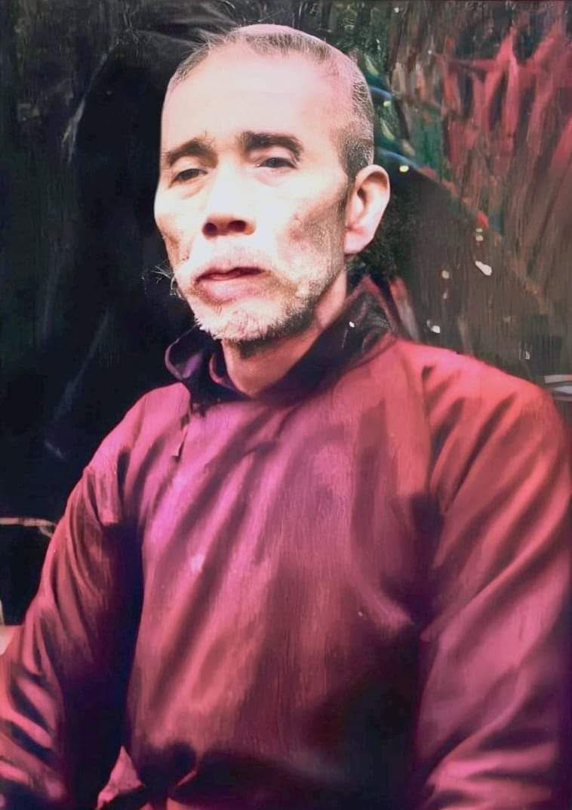

Written by Ho Po Kwong, 1970s Choy Lee Fut Magazine, Volume 1
Translated by Sifu Angus on Apirl 2025
Grandmaster 方玉書 (Fong Yuk Shu) of Hung Sing Choy Lee Fut lineage was a native of 古室, 開平, 麠東. He was born in 廣州 (Guangzhou). His father, 方傑毫 (Fong Kit Ho), came from a prestigious family and was a renowned Cantonese medicine merchant, founder of 廣州自來水廠 (Guangzhou Waterworks) and 慶州方便醫院 (Ching Chau Fong Bin Hospital), where he also served as lifelong superintendent.

Grandmaster Fong Yuk ShuHe was diligent, physically strong, and ambitious. His commitment won the appreciation of 官伯 (Goon Bak). Later, he also studied martial arts under 靜閒法師 (Jing Hin Faat Si) of 南福寺 (Naam Fuk Ji) in 河南 (Hon Naam, Canton), further deepening his skills to a more refined level.
Soon after, 孫中山 (Sun Jung Saan) launched the revolution. Inspired by him, Grandmaster Fong joined the cause, ready to give his life. However, before he could fulfill this mission, he was wanted by the Qing government. On orders from 孫中山 (Sun Jung Saan), he fled and took refuge in 氣州 (Hei Jau). After the revolution succeeded, he returned to 穗 (Seui, another name for 廣州 Gwong Jau), withdrew from politics, and opened a martial arts school and practiced medicine at the 津首組 (Jan Sau Jou) ferry hub.
A few years later, he expanded his operation, establishing six branch schools, with students all over — a thriving legacy indeed.
In 1925, a labor conflict erupted in 廣州 (Gwong Jau) between wooden and iron textile machinery workers. The wooden machine workers hired 左玉畫 (Jo Yuk Wah) as their martial arts head coach. The situation was resolved, and Grandmaster Fong's reputation soared throughout 羊城 (Yeung Sing) — another name for 廣州 (Gwong Jau). Students flocked to his school.
In 1933 and 1934, during the national martial arts competition in 靈州 (Ling Jau), his top disciple — my father 杜漢璋 (Dou Hon Cheung) — won champion and runner-up in staff and spear two years in a row. From then on, Grandmaster Fong was often appointed as a judge in similar events. Not long after, the 廣東省國術協會 (Gwong Dung Saang Gwok Seut Hip Wui) was founded, where he served as a martial arts advisor.
In 1937, Grandmaster Fong came to 香港 (Heung Gong). He opened schools in 灣仔 (Waan Jai) and 北河街 (Bak Ho Gaai) in 九龍 (Gau Lung). He also continued his medical practice. Ever generous, he offered free medical services at 深水埗龍慶佛堂 (Sam Seui Bou Lung Hing Fat Tong) and supported free schooling through the 九龍總商會 (Gau Lung Jung Seung Wui) — earning great praise from the community.
In December 1953, Grandmaster Fong passed away at the age of 83. His Hong Kong disciples arranged his funeral. His spirit now rests eternally in 荃灣華人永遠墳場 (Chyun Waan Wa Yan Wing Yuen Fan Cheung).
📸 Follow us on Instagram for more updates!